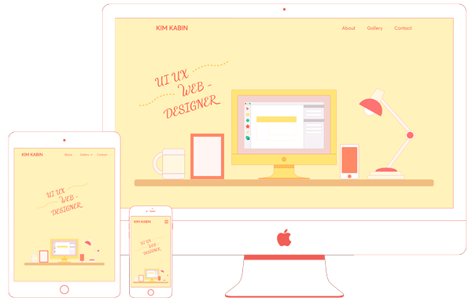
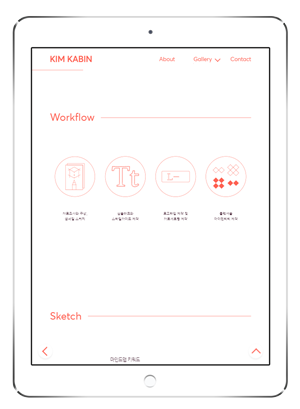

Portfolio Website
디자이너의 작업 공간을 메인으로 원페이지 포트폴리오 사이트를 기획했습니다. 직관적이고 편리한 UI UX를 고려해 디자인했습니다. 기본적인 내용을 메인페이지에서 모두 확인하실 수 있으며 프로젝트 상세페이지에서는 NCS 과정에 따라 기획부터 제작단계를 꼼꼼하게 넣었습니다.
Workflow
-

브레인스토밍과 카드소팅을
통한 키워드, 컨셉 도출 -
프로토타입 제작 후
사용성 테스트 -

HTML / CSS
페이지 제작 -

인터랙티브 효과 적용
및 반응형 사이즈 제작
Brainstorming
브레인스토밍과 카드소팅을 통해 개인포트폴리오의 키워드로 콘셉트를 도출했습니다.
#타이포그라피 #NCS교육과정 #편리함 #skill #인터랙티브 요소 #simple #취미 #폰트 #자격증 #icon #반응형 #자기소개 #SNS #email #trendy
키워드를 토대로 개인 홈페이지를 구상하면서 스케치를 했습니다. 초기 구상 스케치에서 인덱스 메인을 책상 위의 물건으로 표현하고 원페이지로 구성하는 레이아웃은 그대로 유지했습니다. 최종적으로 메인 페이지는 어바웃-갤러리-컨택으로 이어지는 긴 페이지가 되었고 상단 헤더의 메뉴를 통해 스크롤되어 이동이 가능한 형태입니다.
Usability Test
어도비 XD를 활용해 프로토타입을 제작했습니다. 페이지 연결을 설정하고 설문지를 통해 사용성 테스트를 진행했습니다. 사용성 테스트는 가시성, 현실세계와의 부합, 컨트롤, 일관성, 에러 방지, 유연성과 효율성, 비주얼 총 7 항목을 높음, 보통, 낮음으로 평가합니다. 테스트 참여자는 총 13명 입니다.
테스트 결과 컨트롤, 비주얼, 에러 방지 순으로 가장 부족했다고 나왔습니다. 이후 개발 방향과 보완 계획으로 첫째, 자유로운 UI이동을 위해 gnb에서 모든 페이지에 접근할 수 있도록 수정할 예정입니다. 둘째, 메뉴와 소제목들을 점검하여 최대한 혼동되지 않게 할 것입니다. 셋째, 요소들을 좀 더 안정감있게 배열할 것입니다.
Style Guide
메인 배경 컬러는 밝고 따뜻한 노란색을 사용했습니다. 주요 아이콘 일러스트, 타이틀 색은 자몽색(붉은 빛이 도는 진한 주황색)을 적용해서 상큼하고 발랄한 느낌을 낼 수 있도록 했습니다. 어울리는 중간 주황색과 군고구마 색은 폰트에 사용해서 부드러운 이미지로 통일했습니다.
타이틀에 사용되는 영문 폰트는 둥근 느낌이 있는 averta를 사용했고, 한글 폰트는 자연스럽게 정리되어 보이는 나눔 고딕을 활용했습니다.
-
#FFE577
R 255 G 229 B 119 -
#FEC051
R 254 G 192 B 81 -
#EC8456
R 236 G 132 B 86 -
#FF5F51
R 255 G 95 B 81 -
#543243
R 84 G 50 B 67
UI UX Design
각 페이지 구성 및 레이아웃을 설계할 때 고려한 부분들을 정리해보았습니다.
첫 번째로, 가독성을 고려하여 산세리프 서체만 이용하고 내용 블럭간의 여백을 많이 두었습니다.
두 번째로, 일관성을 고려하여 서브페이지의 레이아웃을 통일하였습니다. 그리고 메인 일러스트의 느낌을 유지하고자 목업이미지도 벡터 일러스트 풍으로 적용했고 메인 컬러로 바꾸어서 사이트 안에 잘 녹아나게 했습니다.
세 번째로, 목적성을 고려하여 갤러리에 많은 작품을 넣고자 했고 상세페이지에서도 새창으로 바로 열어서 볼 수 있는 버튼을 가장 위에 넣었습니다. 메인페이지의 어바웃 부분도 스킬, 교육이력 등이 한눈에 잘 들어올 수 있도록 인포그래픽을 이용해 시각적으로 표현했습니다.
네 번째로, 심미성을 고려하여 사이트 전체의 아이콘이미지를 선일러스트로 통일시키고 소제목 옆에 같은 색상의 선 장식을 넣었습니다. 색상은 밝은 노란 바탕에 제목, 일러스트 색을 주황색이나 자몽색으로 두어 경쾌하고 상큼한 느낌을 줍니다.
다섯 번째로, 사용성을 고려하여 상단에 헤더를 고정시켜 언제든지 페이지 이동이 가능하게 했습니다. 화면 하단에는 위로가기와 뒤로가기 버튼이 고정되어 있어 더욱 편리하게 이동이 가능합니다. 서브페이지에서는 페이지를 다 보고 가장 밑에 다음 서브페이지로 넘어가는 배너를 넣어서 순차적으로 살펴보기 쉽게 하였습니다.
Interactive Elements
제이쿼리 플러그인을 이용하여 좀 더 역동적인 웹사이트를 구현했습니다. 플러그인 충돌을 방지하고 가볍게 만들기 위해 플러그인 사용을 최소화하고 나머지는 자바스크립트 소스를 커스텀해서 사용했습니다.
메인 페이지 두번째 섹션에 사용된 circle-progress의 경우, 처음 페이지가 로딩될 때 한번 실행되고 마는 문제를 해결하기 위해 appear.js 파일을 활용하여 사용자가 스크롤해서 화면에 해당 부분이 나타날때 실행이 시작될 수 있게 했습니다.
-
메인 섹션
scrollTop이 0이면 오브젝트가 떨어지는 효과 -
어바웃 섹션
프로그레스 플러그인을 이용한 애니메이션 효과 -
어바웃 섹션
스크롤 위치에 따라서 항목이 순차적으로 나타나는 효과
-
갤러리 섹션
박스 호버하면 이미지 변경 / 웹페이지 보기 버튼 호버효과 / 스와이퍼 플러그인을 이용한 무한 슬라이드 -
-
인덱스 h2
한 글자씩 나타나는 효과 -
자세히보기, 웹페이지 보기 버튼
호버했을 때 버튼의 내용이 바뀌는 효과
-
-
모바일 사이즈 메뉴
햄버거 버튼 바 모양 변화와 메뉴 슬라이드
Responsive Web
반응형 페이지는 기본 width-1920px 크기로 완성한 후에 1599px, 1280px, 1024px, 768px, 414px 순으로 노트북 태블릿 모바일 사이즈를 전부 커버가능하게 제작했습니다. 태블릿 사이즈 부터는 (max-width:1024px) 마우스 호버에 의한 슬라이드 메뉴를 사용할 수 없기 때문에 슬라이드 메뉴를 볼 수 있는 버튼을 나타나게 했습니다.
갤러리의 슬라이드 되는 부분은 pc사이즈에서는 한번에 3개씩 보이게 되어있지만 태블릿 세로 사이즈(max-width:768px)에서는 2개씩, 모바일 사이즈(max-width:414px)에서는 1개씩 보일 수 있게 수정했습니다.
- 
Organizing Files
최종적으로 콘텐츠가 들어있는 폴더의 파일의 계층 구조를 파악하여 표로 정리해 둔 문서 정보 파일을 작성합니다. 갤러리에 쓰이는 포트폴리오 사이트(web_pages 폴더 내에 사이트 이름 폴더)는 계속 추가되거나 교체될 수 있습니다.
| 폴더 | 파일명 | 상세 |
|---|---|---|
| index.html | 메인-어바웃-갤러리-컨택트 섹션으로 구성 | |
| project_1.html | 갤러리 첫 번째 상세페이지 | |
| project_2.html | 갤러리 두 번째 상세페이지 | |
| project_3.html | 갤러리 세 번째 상세페이지 | |
| project_4.html | 갤러리 네 번째 상세페이지 | |
| css | style_common.css | 전체 페이지 공통 스타일. 리셋, 폰트, 레이아웃, 헤더, 푸터 |
| swiper.min.css | swiper 플러그인 스타일 | |
| style_index.css | 인덱스 스타일 | |
| style_sub.css | 서브 페이지 공통 레이아웃 스타일 | |
| style_project_1.css | 상세페이지1 스타일 | |
| style_project_2.css | 상세페이지2 스타일 | |
| style_project_3.css | 상세페이지3 스타일 | |
| style_project_4.css | 상세페이지4 스타일 | |
| font | AvertaDemoPECuttedDemo-Regular.otf | averta 일반 서체 오픈타입 |
| avertademopecutteddemo-regular-webfont.woff | averta 일반 서체 woff | |
| AvertaDemoPE-ExtraBold.otf | averta 볼드 서체 오픈타입 | |
| avertademope-extrabold-webfont.woff | averta 볼드 서체 woff |
| img | 인덱스와 서브 페이지에서 사용하는 이미지 | |
| js | jquery-3.4.1.min.js | 제이쿼리 파일 |
| circle-progress.min.js | 서클 프로그레스 플러그인 파일 | |
| circle.js | 서클 프로그레스 적용 파일 | |
| appear.js | 화면에 나타날 때 실행시켜주는 플러그인 파일 | |
| swiper.min.js | 갤러리 플러그인 파일 | |
| script.js | 전체페이지 공통 스크립트(gnb,스크롤바,위로가기버튼) | |
| index.js | 인덱스 페이지 스크립트 | |
| sub.js | 서브 페이지 공통 스크립트 | |
| web_pages | monthly_leaves | 갤러리 프로젝트 1 폴더 |
| samwon_paper | 갤러리 프로젝트 3 폴더 | |
| hanwha_chemical | 갤러리 웹페이지 1 폴더 | |
| all_fresh | 갤러리 웹페이지 2 폴더 | |
| hotel_lago_di_garda | 갤러리 웹페이지 3 폴더 | |
| nike | 갤러리 웹페이지 4 폴더 | |
| sports | 갤러리 웹페이지 5 폴더 |
Completion Report
프로젝트 완료 결과 보고서 작성. 프로젝트의 수행 목적, 결과물의 개요, 일정, 스타일가이드 등을 포함하여 작성합니다.
- 페이지 이동의 번거로움을 줄인 원페이지
- 결과물 뿐만 아니라 제작 과정이 잘 드러나는 페이지
- 사용자가 흥미를 갖고 끝까지 볼 수 있는 페이지
- 11/14 ~ 11/18 키워드와 컨셉도출을 기반으로 자료 검색 및 수집
- 11/19 ~ 11/20 아이디어 스케치, 와이어프레임
- 11/21 ~ 11/25 스토리보드 제작
- 11/26 ~ 11/29 XD를 이용한 프로토타입 제작
- 11/30 ~ 12/04 사용성 테스트 실행 및 결과 분석
- 12/05 ~ 12/16 HTML, CSS로 정적인 페이지 제작
- 12/17 ~ 12/30 javascript(jQuery)로 동적인 페이지 제작
- 12/31 ~ 01/07 문서 정보 및 개선 보완점 작성
- 01/08 ~ 01/14 최종적으로 작업했던 파일과 결과물 파일을 정리
스타일 가이드와 중복이 되는 컬러와 폰트를 제외하고 제목 가이드 및 디자인 유형을 작성합니다.

<H2>
폰트: averta 볼드이탤릭체
컬러: #EC8456
사이즈: 5em
<H3>
폰트: avert
컬러: #FF5F51
사이즈: 3em
h3:before
(라인장식)
높이: 1px
너비: 1000%
h3:after
(h3 배경)
높이: 100%
너비: 100%
인덱스에서는 섹션 안에 h3 제목, 서브페이지에서는 섹션 제목은 제목 옆에 같은 색으로 된 선 장식이 들어갑니다. 사이트 전체적인 일러스트 통일감을 위해 목업 이미지도 벡터 일러스트로 적용했습니다. 갤러리의 처음 보이는 썸네일도 라인 일러스트로 아이콘처럼 만들어서 조화롭게 배치했습니다.
Final Report
- 이미지 용량 감소를 통한 로딩 속도 개선 (보이는 사이즈에 맞게 작게 편집, svg사용, gif용량 줄이기)
- 서브 페이지가 내용이 많아 세로로 길어졌기 때문에 섹션별로 이동 가능한 네비게이션이 추가적으로 필요
- NCS과정 이수내용에 관한 부분 추가